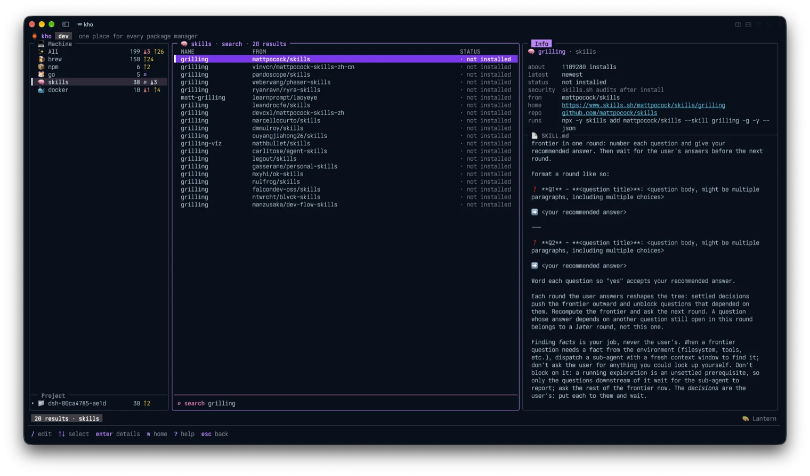

One list
Machine, project and images, with installed and latest versions side by side.
Agent-friendly terminal app
Install, update and audit everything on your machine and in your project. Every advisory comes with the command that fixes it.
or
$ brew trust vuon9/tap $ brew install --cask vuon9/tap/kho
macOS and Linux, from the tap.
$ go install github.com/vuon9/kho@latest
Go 1.27 or later builds it from source.

Machine, project and images, with installed and latest versions side by side.
OSV, Homebrew and skills.sh, each finding paired with the version that fixes it.
Search a manager for what you are missing, then install, upgrade or remove it here.
Every change shows its command first. Pinned packages are refused, and a project is only ever read.
Reads and changes both land in the history, newest first.
One binary for macOS and Linux. docker and trivy are optional.
$ npx skills add vuon9/kho --skill use-kho -g
Ask your agent
With the use-kho skill, set up a task that runs kho check every morning at 9 on this machine. Send me what it finds, with a fix for each finding. Never change anything from the task; I'll approve updates in a conversation.